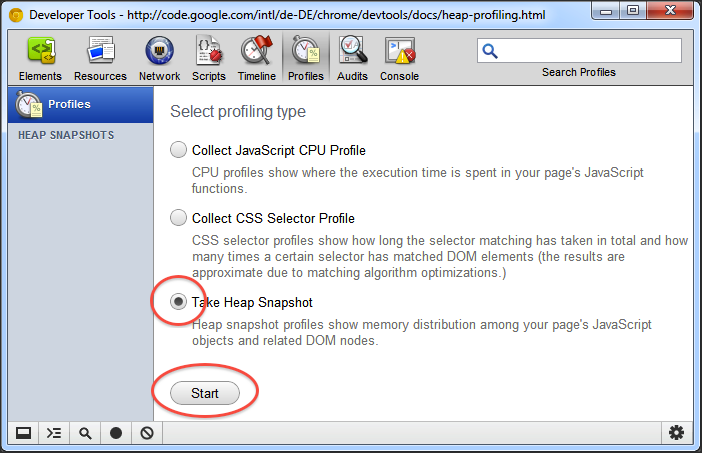
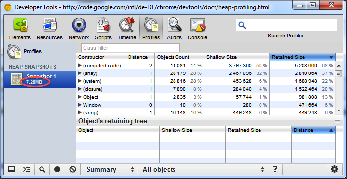
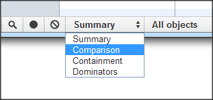
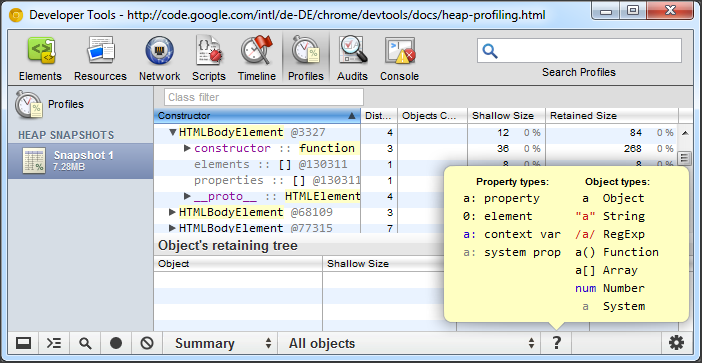
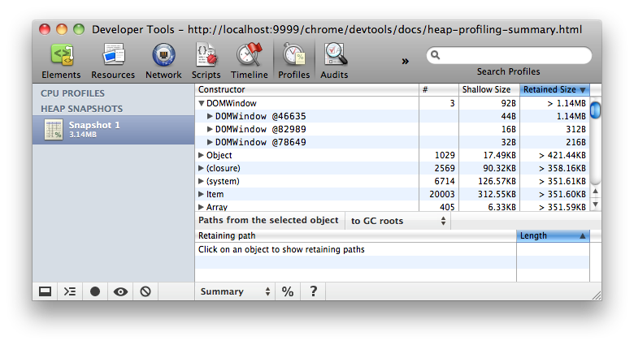
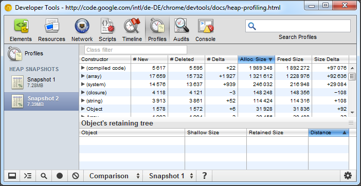
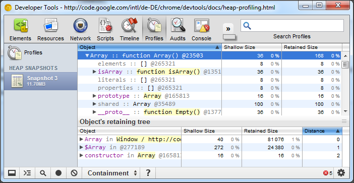
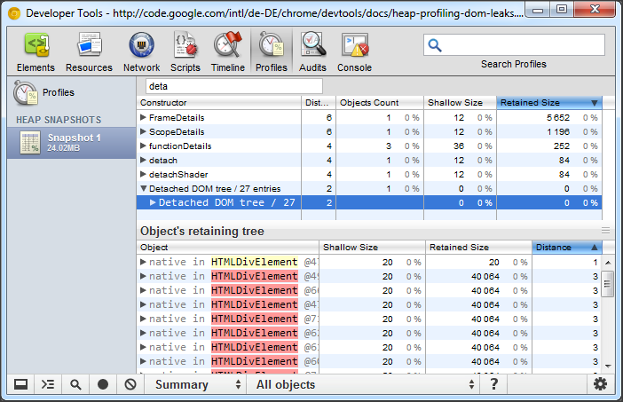
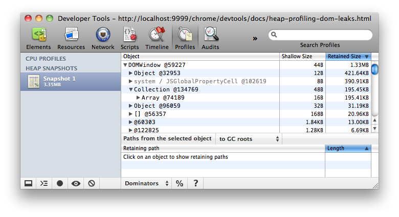
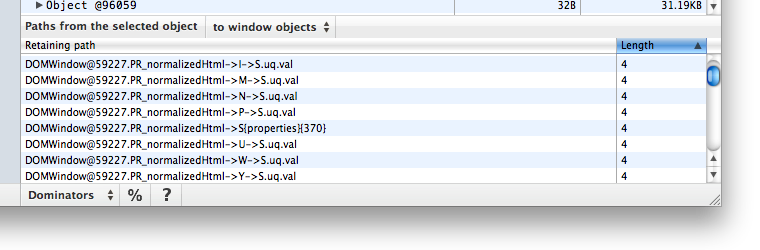

This tutorial explains how to use the Heap Profiler for uncovering
memory leaks in your applications.
Basic functions
Taking a snapshot
On the Profiles tab, select the Take Heap
Snapshot option and press Start:

Snapshots are initially stored in the renderer process memory. They are
transferred to the DevTools on demand, when you click on the snapshot icon to
view it. After the snapshot has been loaded into DevTools and has been parsed,
the number below the snapshot title appears and shows the total size of
the reachable JavaScript
objects:

Clearing snapshots
Snapshots can be removed (both from DevTools and renderer's memory) by
pressing the Clear all profiles button:
Note: Closing the DevTools window will not delete
collected profiles from the renderer's memory. When reopening DevTools, all
previously taken snapshots will reappear in the list of snapshots.
Switching between snapshot views
A snapshot can be viewed from different perspectives for different tasks. To
switch between views, use the selector at the bottom of the view:

There are four views:
- Summary — shows objects grouped by
the constructor name;
- Comparison — displays difference between
two snapshots;
- Containment — allows exploration of heap
contents;
- Dominators —
shows dominators
tree.
Looking up color coding
Properties and property values of objects have different types and
are colored accordingly. To view the type color legend, press the
question mark button on the status bar:

Each property has one of four types::
- property — a regular property with a name,
accessed via the
. (dot) operator, or via
[] (brackets) notation, e.g. ["foo bar"];
- element — a regular property with a numeric
index, accessed via
[] (brackets) notation;
- context variable — a variable in a function
context, accessible by its name from inside a function closure;
- system property — property added by the
JavaScript VM, not accessible from JavaScript code.
Objects designated as System don't have
corresponding JavaScript types. They are part of JavaScript VM's
object system implementation.
Views in detail
Summary view
Initially, a snapshot opens in the Summary view, displaying
object totals, which can be expanded to show instances:

Top-level entries are "total" lines. They display the
constructor name, and group all objects created using this
constructor. The number of object instances is displayed in
the # column. The Shallow size
column displays the sum
of shallow sizes
of all objects created by a certain constructor
function. The Retained Size column displays the
maximum retained size among the same set of objects.
After expanding a total line in the upper view, all of its
instances are displayed. For each instance, its shallow and retained
sizes are displayed in the corresponding columns. The number after
the @ character is the object unique ID, allowing to
compare heap snapshots on per-object basis.
Try this demo
page (opens in a new tab) to understand how
the Summary view can be used.
Comparison view
When more than one heap snapshot is taken, it is possible to
compare them, and find leaked objects. To verify that a certain
application operation doesn't create leaks (e.g. usually a pair of
direct and reverse operations, like opening a document, and then
closing it, should not leave any garbage), you may follow the scenario
below:
- take a heap snapshot before performing an operation;
- perform an operation (e.g. open a document);
- perform a reverse operation (close the document);
- take a heap snapshot.
In the Comparison view, the difference between two
snapshots is displayed. When expanding a total entry, added and
deleted object instances are shown:

Try this demo
page (opens in a new tab) to get an idea how to use snapshot comparison for
detecting leaks.
Containment view
The Containment view is essentially a "bird's eye
view" of your application's objects structure. It allows you to peek inside
function closures, to observe VM internal objects that together make up your
JavaScript objects, and to understand how much memory your application uses at a
very low level.
The view provides several entry points:
DOMWindow objects — these are objects
considered as "global" objects for JavaScript code;- GC roots — actual GC roots used by VM's garbage collector;
- Native objects — browser objects that are "pushed"
inside the JavaScript virtual machine to allow automation, e.g. DOM nodes,
CSS rules (see the next section for more details.)
Below is the example of what the Containment view
looks like:

Try this demo page (opens in a new tab) for finding out how
to explore closures and event handlers using the view.
Uncovering DOM leaks
The unique ability of the new tool is to reflect bidirectional
dependencies between browser native objects (DOM nodes, CSS rules) and
JavaScript objects. This helps to discover otherwise invisible leaks
happening due to forgotten detached DOM subtrees floating around.
Native objects are most easily accessible
from Summary and Containment views
— there are dedicated entry nodes for them:

Try this demo page (opens in a new tab) to play with
detached DOM trees.
Dominators view
The Dominators view shows the dominators tree for
the heap graph. The Dominators view looks similar to
the Containment view, but lacks property names. This
is because a dominator of an object may lack direct references to it,
that is, the dominators tree is not a spanning tree of the graph. But
this only serves for good, as helps us to identify memory accumulation
points quickly.

Try this demo page (opens in a new tab) to train yourself
in finding accumulation points.
Retaining paths
The retaining paths view is always displayed. To activate it, click on an
object in the upper pane, regardless of what view is currently active. The
profiler will start looking up for simple paths from roots to the object
selected. It will start from shorter paths, gradually increasing walking
distance. It is possible to restrict the roots set to DOMWindow
objects, instead of all GC roots. This is helpful for finding references
originating from the application itself — they are the most probable
sources for leaks:

In the simplest case, the path will only include "true"
JavaScript objects and use references that are accessible from
JavaScript code, e.g.:
DOMWindow@1234.foo.barDOMWindow@1235.listeners[34].handler["on click event"]
Such paths can be easily evaluated in the debugger console if the appropriate
context has been entered. For example, if an application has several iframes,
execution must be suspended during running a function code belonging to
it). Evaluating a path makes it possible to examine the complete contents of
each object, including properties whose values not stored in the heap, and thus
not captured in a snapshot.
Often it happens that an object is retained via closures. Closure references
are displayed using the -> notation:
DOMWindow@1234.callbacks[12]->contextDOMWindow@1235.callback->nested->inside
Such paths can't be evaluated in the console.
Even more advanced are paths including "hidden"
objects. Normally, the existence of such paths doesn't mean that an
application has a leak. Some of the paths are "low level"
paths, equivalent to their JavaScript shortcuts. E.g., every object
has elements and properties internal arrays,
thus a property value can be displayed as held directly by an object
(this is how a JavaScript programmer sees it), or as an element of the
properties array (this is how the JavaScript virtual machine
actually accesses it.) Knowing these details might help in getting an
understanding of how the virtual machine works. However, for most of web
application developers it is safe to ignore them. Below are some examples of
"internal" paths:
GCRoots@1[254]DOMWindow@1234{prop}{1} — this is equivalent to a JavaScript path: DOMWindow@1234.propDOMWindow@1235.object{properties}{2}